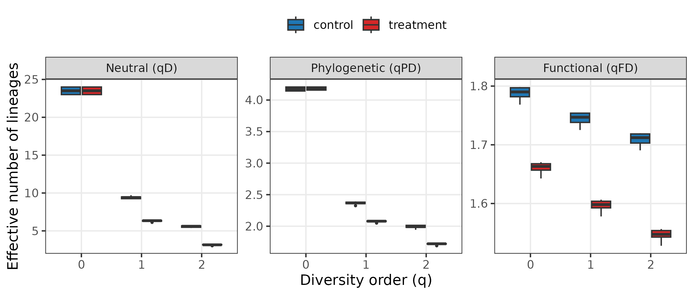
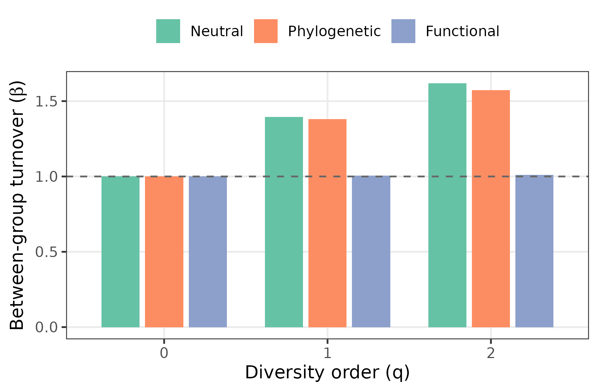
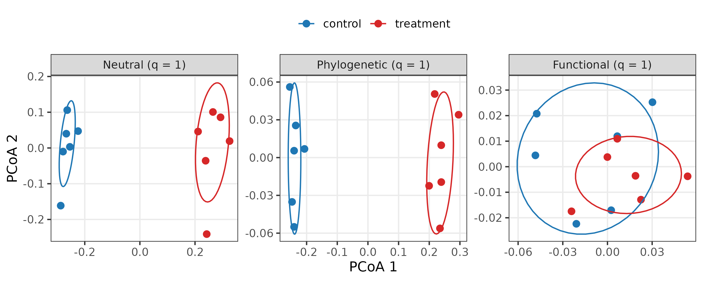
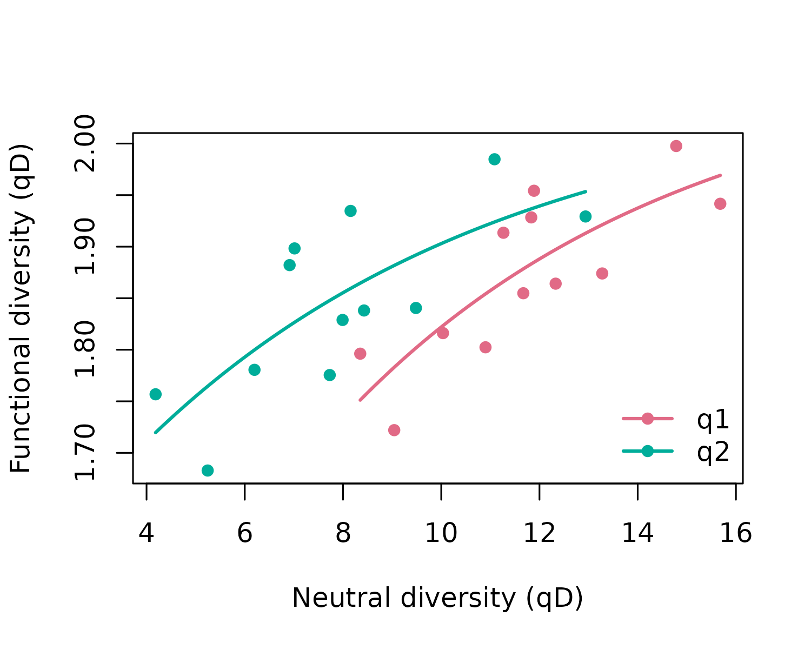

Use case: three faces of diversity in a gut microbiome
Source:vignettes/articles/use-case-bacterial-mags.Rmd
use-case-bacterial-mags.Rmd
library(hilldiv3)
library(ggplot2)
theme_set(theme_bw(base_size = 12) +
theme(panel.grid.minor = element_blank(),
legend.position = "top"))
# hilldiv3 results are long-format data.frame subclasses; drop the class so
# base `$<-` / `rbind` (and ggplot2) work without coercion.
as_df <- function(x) { class(x) <- "data.frame"; x }
pal <- c(control = "#1F77B4", treatment = "#D62728")Genome-resolved metagenomics summarises a microbial community as a
table of metagenome-assembled genome (MAG) abundances. Each MAG carries
two extra layers of information that a raw count ignores: its
position on the bacterial phylogeny and its
functional attributes (genome size, GC content, oxygen
tolerance, encoded capabilities). These layers can move independently:
an intervention may reshuffle which organisms — and which
lineages — dominate a community while leaving what the
community does untouched, if the incoming genomes are functionally
equivalent to the ones they replace. hilldiv3 measures all
three flavours from the same count table and the same calls, so
taxonomic, phylogenetic and functional change can be compared on a
common, interpretable scale (effective numbers of lineages) — and,
crucially, told apart.
The data
We use the bundled simulated data set: 24 MAGs across 12 host
gut samples, split into a control and a
treatment group of six. The MAGs fall into two deep
bacterial clades, and the intervention swaps which clade
dominates: control guts are dominated by clade A, treatment
guts by clade B, with taxon richness left untouched. The two clades are
functional mirrors of one another — for every genome in one
there is a genome in the other with the same trait profile — so a swap
that is dramatic phylogenetically is invisible functionally.
gut_tree is the genome phylogeny and
gut_traits a trait table mixing continuous
(genome_size, gc_content), categorical
(oxygen) and binary (motility) attributes.
group <- rep(c("control", "treatment"), each = 6)
names(group) <- colnames(gut_counts)
metadata <- data.frame(group = group, row.names = colnames(gut_counts))
grp <- function(s) group[s]
dim(gut_counts) # 24 MAGs x 12 samples
#> [1] 24 12
range(colSums(gut_counts > 0)) # per-sample richness (near-constant)
#> [1] 23 24
head(gut_traits)
#> genome_size gc_content oxygen motility
#> mag01 1.64 0.343 anaerobe 0
#> mag02 1.97 0.354 microaerophile 1
#> mag03 2.34 0.400 facultative 0
#> mag04 2.75 0.420 aerobe 1
#> mag05 3.20 0.447 anaerobe 0
#> mag06 3.66 0.496 microaerophile 1traits2dist() turns that mixed trait table into a
functional distance with Gower’s coefficient, which handles the
different variable types automatically:
fdist <- traits2dist(gut_traits)
range(fdist)
#> [1] 0.0000000 0.9988839Neutral, phylogenetic and functional diversity from one call
The diversity type is chosen by what you supply: nothing
extra → neutral, tree = → phylogenetic, dist =
→ functional. The interface never changes.
neu <- as_df(hilldiv(gut_counts, q = c(0, 1, 2)))
phy <- as_df(hilldiv(gut_counts, q = c(0, 1, 2), tree = gut_tree))
fun <- as_df(hilldiv(gut_counts, q = c(0, 1, 2), dist = fdist))
neu$flavour <- "Neutral (qD)"
phy$flavour <- "Phylogenetic (qPD)"
fun$flavour <- "Functional (qFD)"
alpha <- rbind(neu, phy, fun)
alpha$group <- grp(alpha$sample)
alpha$flavour <- factor(alpha$flavour,
c("Neutral (qD)", "Phylogenetic (qPD)", "Functional (qFD)"))
aggregate(value ~ flavour + q + group, alpha, function(x) round(mean(x), 2))
#> flavour q group value
#> 1 Neutral (qD) 0 control 23.83
#> 2 Phylogenetic (qPD) 0 control 3.76
#> 3 Functional (qFD) 0 control 1.93
#> 4 Neutral (qD) 1 control 12.25
#> 5 Phylogenetic (qPD) 1 control 2.10
#> 6 Functional (qFD) 1 control 1.90
#> 7 Neutral (qD) 2 control 8.11
#> 8 Phylogenetic (qPD) 2 control 1.64
#> 9 Functional (qFD) 2 control 1.87
#> 10 Neutral (qD) 0 treatment 23.50
#> 11 Phylogenetic (qPD) 0 treatment 3.75
#> 12 Functional (qFD) 0 treatment 1.87
#> 13 Neutral (qD) 1 treatment 11.26
#> 14 Phylogenetic (qPD) 1 treatment 1.96
#> 15 Functional (qFD) 1 treatment 1.85
#> 16 Neutral (qD) 2 treatment 7.78
#> 17 Phylogenetic (qPD) 2 treatment 1.54
#> 18 Functional (qFD) 2 treatment 1.82
ggplot(alpha, aes(factor(q), value, fill = group)) +
geom_boxplot(outlier.size = 0.6, width = 0.7) +
facet_wrap(~ flavour, scales = "free_y") +
scale_fill_manual(values = pal, name = NULL) +
labs(x = "Diversity order (q)", y = "Effective number of lineages")
At the alpha (within-sample) level the two groups look almost identical in every flavour: a single host carries about the same number of effective MAGs, spread over about the same amount of the phylogeny and the same functional space, whether or not it received the treatment. Read at the alpha level alone, the intervention looks like it did nothing. The effect is not in how much diversity each gut holds, but in which lineages hold it — a compositional change that only between-sample analysis can see.
Where does the community turn over — and where doesn’t it?
hillpart() partitions diversity between the two groups
and reports beta, the effective number of distinct communities. Running
it for each flavour shows which axis the treatment shifts:
part <- function(type, ...) {
m <- as_df(hillpart(gut_counts, q = c(0, 1, 2), hierarchy = ~ group,
metadata = metadata, ...))
m <- m[m$scale == "total", c("q", "beta")]
m$flavour <- type
m
}
beta <- rbind(part("Neutral"),
part("Phylogenetic", tree = gut_tree),
part("Functional", dist = fdist))
beta$flavour <- factor(beta$flavour, c("Neutral", "Phylogenetic", "Functional"))
ggplot(beta, aes(factor(q), beta, fill = flavour)) +
geom_col(position = position_dodge(0.8), width = 0.7) +
geom_hline(yintercept = 1, linetype = 2, colour = "grey40") +
scale_fill_brewer(palette = "Set2", name = NULL) +
labs(x = "Diversity order (q)",
y = expression("Between-group turnover (" * beta * ")"))
Between-group beta grows strongly with q for the
neutral and phylogenetic decompositions but stays
essentially flat (β ≈ 1) for the functional one. The
clade swap replaces the dominant genomes with phylogenetically distant
ones, so taxonomic and evolutionary composition turn over
almost in lock-step — yet because the two clades are functional mirrors,
the functional make-up of the community barely moves.
Distinguishing taxonomic, phylogenetic and functional turnover on one
common beta scale is a core strength of the Hill-number framework as
implemented here, and here it isolates a change that is phylogenetic but
not functional.
Ordination in three spaces
hillpair() accepts the same tree = /
dist = switch, so one workflow produces ordinations in
neutral, phylogenetic and functional
space:
ord_one <- function(d, lab) {
pc <- cmdscale(d, k = 2)
o <- data.frame(pc, mag = rownames(pc))
names(o)[1:2] <- c("PCoA1", "PCoA2")
o$group <- grp(o$mag); o$space <- lab
o
}
ord <- rbind(
ord_one(hillpair(gut_counts, q = 1, metric = "C"), "Neutral (q = 1)"),
ord_one(hillpair(gut_counts, q = 1, metric = "C", tree = gut_tree), "Phylogenetic (q = 1)"),
ord_one(hillpair(gut_counts, q = 1, metric = "C", dist = fdist), "Functional (q = 1)")
)
ord$space <- factor(ord$space,
c("Neutral (q = 1)", "Phylogenetic (q = 1)", "Functional (q = 1)"))
ggplot(ord, aes(PCoA1, PCoA2, colour = group)) +
geom_point(size = 2.4) +
stat_ellipse(level = 0.68) +
facet_wrap(~ space, scales = "free") +
scale_colour_manual(values = pal, name = NULL) +
labs(x = "PCoA 1", y = "PCoA 2")
The same samples separate cleanly into control and treatment in neutral space and in phylogenetic space, but collapse onto a single overlapping cloud in functional space. The picture the three panels paint together — who and which lineage differ, what they do does not — is one no single distance could give.
Functional redundancy
hillred() quantifies the functional
redundancy that underlies this pattern: it fits the saturating
relationship between neutral diversity (number of genomes) and
functional diversity (number of distinct trait profiles) across samples.
A curve that plateaus well below the spread of neutral diversity means
many genomes share functions — so the community can replace genomes
without losing function.
red <- hillred(gut_counts, q = c(1, 2), dist = fdist)
as_df(red)[, c("q", "redundancy")]
#> q redundancy
#> 1 1 0.6957598
#> 2 2 0.6024724
plot(red)
The fitted redundancy is high (around 0.6–0.7): functional diversity
saturates well below the spread of neutral diversity, so adding genomes
contributes far less than proportional new function. This is exactly
why the treatment could overturn the community’s taxonomic and
phylogenetic composition without touching its function — every
functional role lost with clade A is recovered from its mirror in clade
B. The redundancy that hillred() measures is the mechanism
the beta and ordination analyses revealed.
Summary
From one MAG table plus a genome tree and a trait table,
hilldiv3 produced a complete three-flavour analysis through
one interface: trait-to-distance conversion
(traits2dist()); neutral, phylogenetic and functional alpha
diversity (hilldiv()); between-group partitioning for each
flavour (hillpart()); ordinations in neutral, phylogenetic
and functional space (hillpair()); and functional
redundancy (hillred()). The unified, type-switching
interface is what lets a single study separate a change that is
taxonomic and phylogenetic from one that is functional — here revealing
a community reorganised in identity but conserved in function.
References
- Jost, L. (2007). Partitioning diversity into independent alpha and beta components. Ecology, 88, 2427–2439.
- Chiu, C.-H., Jost, L. & Chao, A. (2014). Phylogenetic beta diversity, similarity, and differentiation measures based on Hill numbers. Ecological Monographs, 84, 21–44.
- Alberdi, A. & Gilbert, M.T.P. (2019). A guide to the application of Hill numbers to DNA-based diversity analyses. Mol. Ecol. Resour., 19, 804–817. ```